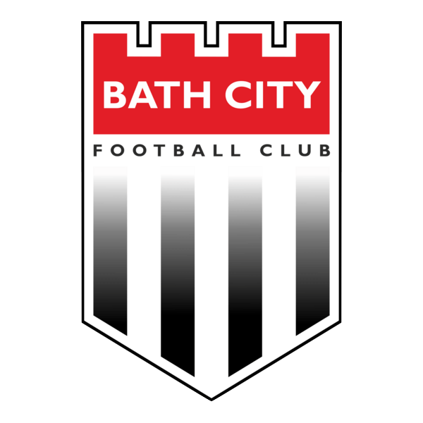

Football / Applied Analysis
Bath City FC Set-Piece Analysis
Set-piece analysis support and tagging workflow design for a senior football performance environment.
Football / Applied Analysis
Set-piece analysis support and tagging workflow design for a senior football performance environment.
This work centres on structuring set-piece analysis in a way that makes patterns easier to review and easier to communicate back to staff. The emphasis is on clarity, consistency, and actionable presentation.
The original project files include a visual summary for this work. The page is set up to support future reports, clips, or written notes without needing another structural redesign.

Need similar support?
If you need structured support around review workflows or set-piece presentation, I am happy to discuss it.